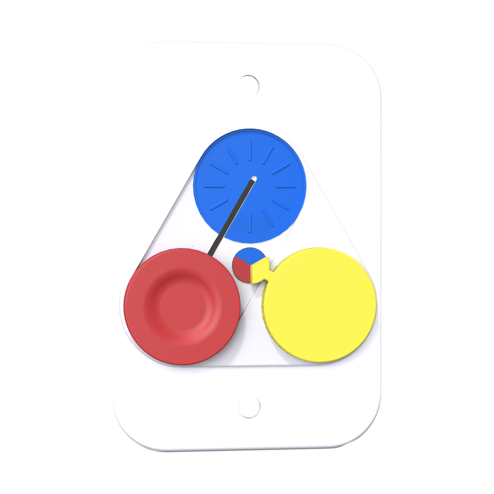

A playful and adaptable lightswitch
Aug 2023 - Sep 2023
SolidWorks/Rendering
Research
3D Printing
Physical Prototyping
Photoshop
Procreate
Forgetting to turn off unused lights in homes is a major contributor to light pollution and electricity waste globally. Through this project, I researched and explored opportunities for encouraging users to turn off the lights before they leave a room. Prime is the playful, customizable, and satisfying dimmer switch that when off represents completion due to its graphics and circular designs being "reset".
Professors: Brook Kennedy